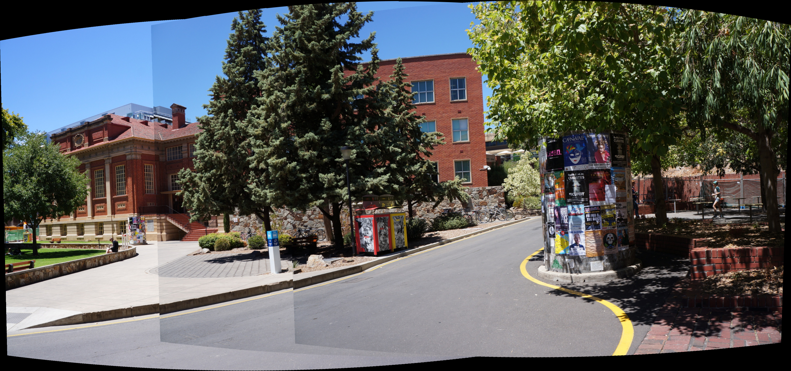
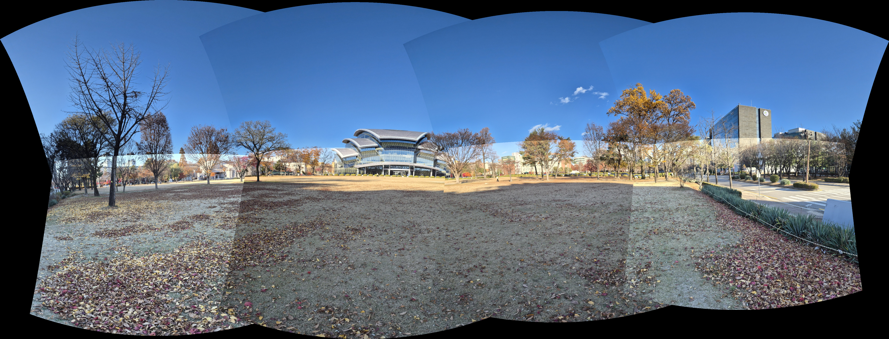
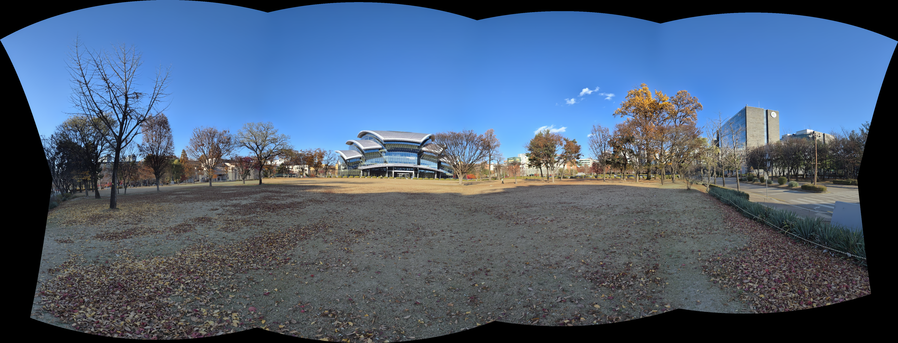

조사일: 2026-11-23 · 논문·저자 프로젝트·공식 문서 중심 · 비교 후보의 설치 및 성능 실험은 아직 수행하지 않음
권장 방향은 Brown–Lowe 기반 과제용 baseline → 특징 기술자 개선 → 강건 추정 개선 → 시차를 처리하는 국소 워핑 → 합성 후처리 비교이다. 한 번에 모든 단계를 교체하지 말고, 정합 정확도와 합성의 자연스러움을 분리해 효과를 설명한다. 아래 우선순위는 현재 과제와 코드를 분석한 제안이며, 이 데이터에서 개선 효과를 이미 측정했다는 뜻은 아니다.
사용자가 선택한 조건에 따라 Q1·Q2·Q3·E1에는 노출 보정, 이음선 탐색, 블렌딩을 적용하지 않았다. E2에만 영상별 gain 보정과 최대 가중치 영역 선택, 5-band blending을 적용했다. Graph-cut과 블록별 gain 보정은 baseline에서 제외했다.
| 미션 | 기하 처리 | 합성 | PNG 크기 |
|---|---|---|---|
| Q1 | 두 영상의 평면 호모그래피 | 뒤 입력으로 덮어쓰기 | 1385 × 580 |
| Q2 | 카메라 추정·BA → 공통 평면 합성 → 전체 한 장의 원통 재투영 | 뒤 입력으로 덮어쓰기 | 2968 × 1395 |
| Q3 | 카메라 추정·BA → 공통 원통 좌표계 | 뒤 입력으로 덮어쓰기 | 4737 × 2511 |
| E1 | 카메라 추정·BA → 공통 구면 좌표계 | 뒤 입력으로 덮어쓰기 | 4737 × 1813 |
| E2 | E1과 같은 기하 추정 및 구면 투영 | Global gain + max-weight mask + multi-band | 4737 × 1813 |
현재 Q3 입력은 단일 전방 평면에 담기지 않는 넓은 범위여서, 이전에 승인한 공통 원통/구면 경로를 유지했다. 여덟 입력 모두 사용한다. 보간은 기하 변환에 필요한 연산으로 유지한다.
python3 -B experiments/run_brown_lowe.py # 이후 stitching.py가 바뀌어도 저장 당시 코드로 재실행 python3 -B run.py --q all --code results/brown+lowe/stitching_snapshot.py --out results/brown+lowe
experiment.json에는 입력·코드·출력 SHA-256, Python/OpenCV/NumPy 버전, 설정, 실행 시간이 기록되어 있다. 각 미션의 status JSON과 실행 로그도 같은 폴더에 있다. 현재 실행 시간은 1회 실행의 읽기·저장 포함 시간으로, 반복 측정한 속도 벤치마크가 아니다.
추천 주지표는 독립 대응점 오차와 전체 입력 정합 성공률이다. PSNR·SSIM은 겹침 영역의 광도 일치도를 보여주는 보조 지표로 사용한다. 현재 사진에는 정답 파노라마가 없으므로, 결과 PNG와 원본을 단순 resize해 비교하거나 다른 알고리즘 결과를 정답으로 간주하지 않는다.
| 지표 | 의미와 측정 | 조건·한계 |
|---|---|---|
| 독립 대응점 오차 ↓ | 기하 추정에 쓰지 않은 수동 대응점 또는 별도 검증 대응점을 같은 좌표계에 투영하고 거리의 median, RMSE, P95를 보고한다. | 모든 방법에 같은 평가점·투영 축척을 적용한다. Q3와 구면 결과를 비교할 때는 원본 영상 재투영 오차나 광선 각도 오차가 더 적절하다. 모델이 자체 선택한 inlier 오차는 낙관적인 진단값이다. |
| Homography corner error ↓ / AUC ↑ | 정답 H가 있을 때 네 모서리를 추정 H와 정답 H로 옮긴 평균 거리를 측정한다. 오차 임계값별 성공률이나 AUC를 함께 보고한다. | HPatches처럼 평면 모델이 성립하는 평가에 적합. 다중 깊이·초광각 Q3 전체를 H 하나로 평가하지 않는다. 임계값, 해상도와 AUC 적분 정의를 고정한다. |
| 겹침 영역 PSNR ↑ / SSIM ↑ | 두 원본을 워핑한 뒤 공통 유효 영역에서 색·구조의 일치도를 측정한다. PSNR = 10 log10(L²/MSE), uint8이면 L=255. | 정합 평가는 블렌딩 전 측정. 노출·이동 물체의 영향을 받는다. 검은 빈 영역을 빼고 SSIM 윈도 전체가 유효한 영역만 사용한다. 동일 평가 영역과 색 공간·범위·윈도 설정을 고정한다. |
| Inlier 수·비율 / 분포 | 후보 매칭 중 기하 모델과 일치하는 대응점의 수와 비율, 화면 격자별 분포를 기록한다. | inlier 판정 임계값을 고정해야 한다. 한 구역에 몰린 점, 적지만 쉬운 점만 남긴 경우를 경계한다. 정확도의 단독 지표가 아니다. |
| 잔상·경계·형상 왜곡 | 미리 정한 나무·건물 모서리·도로 영역 확대, 50:50 겹침, 이음선 주변 밝기 차이, 동일 배율의 블라인드 선호 평가를 함께 사용한다. | 자체 seam/ghost 점수는 산식을 명시한 프로젝트 지표로 표기한다. 원통·구면에서는 수평 직선이 휘는 것이 정상일 수 있어, 평면 직선성 점수를 그대로 적용하지 않는다. |
| 성공률·장면 보존율 ↑ | 입력 전부 포함·유효 출력·필수 랜드마크 보존 여부를 기록한다. 공통 기준 시야/마스크에서 보존 면적을 비교한다. | 실패 사례를 평균에서 빼지 않는다. 단순 출력 가로×세로 또는 유효 픽셀 비율만으로 품질을 평가하면 크롭·축척 변경이 유리해질 수 있다. |
| 시간·메모리 ↓ | 특징 추출, 매칭, 기하 추정, 워핑, 합성을 분리해 측정하고 전체 시간도 제시한다. | 같은 장비·해상도·스레드 수로 준비 실행 후 5회 이상 반복, 중앙값과 변동 폭 기록. GPU라면 동기화·모델 로딩 포함 여부를 명시한다. |
SSIM의 본래 의미는 기준 영상 대비 구조적 유사도이다. 정답 파노라마가 없는 경우 overlap SSIM은 최종 영상의 절대 품질 점수가 아니다. Wang 등의 SSIM 공식 페이지. UDIS++도 워핑과 합성을 분리해 평가한다. 이 프로토콜을 참고하되 데이터·평가 영역·실패 처리 규칙이 다른 논문의 수치를 직접 비교하지 않는다. UDIS++ 논문, §4.2
| 벤치마크·공식 자료 | 용도 | 이 프로젝트에서의 활용 |
|---|---|---|
| HPatches full image sequences 공식 프로젝트 | 조명·시점 변화에 대한 특징점/호모그래피 검증. Full sequences에 대응 homography 제공. | RootSIFT, MAGSAC++의 정량 비교 우선 후보. patch 데이터와 full image 데이터를 구분하고 사용 subset을 기록. 넓은 시차·8장 파노라마 성능까지 대표하지 않는다. |
| UDIS-D UDIS++ 평가 구현 | 실제 장면의 영상 쌍을 이용한 stitching 평가. UDIS++는 1,106개 평가 샘플 사용. | APAP·학습 기반 warp의 실제 시차 대응 비교. 완벽한 정답 파노라마가 있는 데이터로 소개하지 않는다. 원 평가 스크립트의 mask, resize, failure 규칙을 따른다. |
| APAP/Moving DLT 데이터 | 전역 호모그래피로 맞추기 어려운 시차 사례, 국소 워핑 정성 비교. | 건물·근거리 물체의 이중 윤곽과 비겹침 영역 왜곡 비교. 공식 프로젝트에 2장 MDLT와 여러 장 BAMDLT 코드가 구분되어 있다. |
| Image Matching Benchmark | 매칭·강건 추정으로 얻은 카메라 pose를 평가하는 프레임워크. | 학습형 매처를 연구할 때 선택. pose GT가 필요하며 이음선·블렌딩 품질을 직접 평가하는 벤치마크는 아니다. |
| ASIS / ACDIS, NeurIPS 2025 | 저조도·안개·수중 악조건 stitching. 저자 저장소는 2,250쌍과 homography reference를 제공한다고 명시. | 악조건 강건성까지 확장할 때 활용. 현재 주간 캠퍼스 사진과는 문제 분포가 다르므로 우선순위는 낮다. |
권장 조합: 제공 Q1/Q2 + 직접 촬영 Q3를 주 실험으로, HPatches를 기하 정확도 확인용으로, UDIS-D 또는 APAP 사례를 시차 검증용으로 사용한다. 공개 데이터의 일부만 평가했다면 “고정 subset 평가”로 표기한다. Q3·E1·E2는 동일 촬영 세트를 쓰므로 서로 독립적인 세 장면으로 세지 않는다.
과제 안내 마지막 페이지는 컴퓨터비전 라이브러리를 OpenCV로 제한하고, 외부 검출법은 직접 구현하도록 안내한다. 따라서 아래 학습 기반 저장소를 그대로 설치해 제출 코드에서 import하는 것은 현재 안내 조건에 맞지 않는다. 학습형 방법은 별도 연구 비교 후보이며, 과제 적용 후보와 구분한다.
| 방법·연도 | 바꾸는 단계 / 기대 효과 | 코드·과제 적합성 |
|---|---|---|
| RootSIFT · 2012 | SIFT descriptor를 L1 정규화 후 원소별 제곱근으로 변환. 검출기는 유지해 기술자 효과만 비교 가능. 이 사진에서의 개선 여부는 실험 필요. | OpenCV SIFT + NumPy로 직접 구현 가능. 원 논문 |
| MAGSAC++ · CVPR 2020 | RANSAC의 강건 모델 추정 대체. 단일 inlier 판정에 대한 민감도를 줄이는 접근. OpenCV 호출에는 여전히 적절한 오차 상한/종료 관련 설정이 필요. | 저자 GitHub, OpenCV USAC 문서. 로컬 OpenCV 4.5.4에 USAC_MAGSAC 존재 확인. Q2/3는 detail matcher 내부 추정도 교체해야 실제 비교가 된다. |
| APAP / Bundled Moving DLT · 2013/2014 | 위치별 가중 DLT로 국소 변환을 추정해 깊이가 다른 물체의 시차를 완화. 더 많은 자유도로 비겹침 영역 왜곡·계산량이 늘 수 있다. | 저자 코드·데이터는 MATLAB/MEX/Ceres 기반. 제출에는 NumPy SVD 및 OpenCV remap으로 직접 구현하는 방향. 현재 넓은 Q3에는 공통 원통 위 국소 보정/다중영상 일관성이 추가로 필요. |
| Block gain + Graph-cut + Multi-band | E2의 영상별 밝기 보정을 공간별 보정으로 바꾸고, 내용 기반 이음선을 추가해 합성 품질 개선 여부를 검증. | OpenCV 공식 detailed stitching 예제. 기존 코드에 관련 함수가 있음. 단순히 “정합 정확도 향상”이라고 부르지 않는다. |
| LightGlue · ICCV 2023 | 희소 특징점 사이의 학습 기반 매칭. SIFT 지원 모델을 사용하면 매처만 바꾼 비교가 가능. SuperPoint 조합은 검출기와 매처가 함께 바뀐다. | cvg/LightGlue. PyTorch·가중치 필요. 연구용 비교 후보. 라이선스는 사용하는 특징 검출기까지 각각 확인. |
| EfficientLoFTR · CVPR 2024 | 별도 희소 검출점에 의존하지 않는 semi-dense 매칭. 저텍스처나 시점 변화에서 검증할 후보. | zju3dv/EfficientLoFTR. 공식 repo는 사전학습 모델 및 평가 코드 제공. PyTorch 기반이며 매칭 이후 RANSAC·BA·투영·합성은 별도 필요. |
| XFeat · CVPR 2024 | 가벼운 학습형 특징점·기술자와 매칭. 정확도–시간 절충 비교에 적합. | verlab/accelerated_features. CPU 실행도 다루지만 PyTorch 의존성은 남는다. CPU 실행 가능성과 과제 허용 여부는 별개. |
| UDIS++ · ICCV 2023 | 전역 homography + 국소 TPS warp, 학습 기반 합성 마스크. 시차가 큰 영상의 정합과 합성을 함께 다룬다. | nie-lang/UDIS2, 논문. 기본은 영상 쌍. 현재 8장·원통/구면 요구에 그대로 대체할 수 없고 다중영상 확장 설계가 필요. |
| ACDIS · NeurIPS 2025 | 악조건 영상의 정합·합성과 양방향 일관성을 연구한 방법. | ZengxiZhang/ACDIS, 논문. 최신 동향 소개용 후보. 저조도/안개 데이터가 없다면 현재 과제에서 첫 구현 대상으로 삼을 이유는 약하다. |
이 목록은 서로 다른 단계를 개선하는 방법들을 정리한 것이며, 전체 stitching 품질의 통합 순위나 최신 SOTA 순위가 아니다. APAP는 최근 논문은 아니지만 전역 회전 모델이 처리하지 못하는 시차를 설명하는 비교 대상으로 유용하다.
| 실험 | 단독 변경 | 확인할 질문 |
|---|---|---|
| B0 | 이번 Brown–Lowe 기반 과제 baseline | 기준 실패 사례와 오차는 무엇인가? |
| B1 | B0의 SIFT descriptor → RootSIFT | 특징점 위치를 유지해도 대응 품질이 달라지는가? |
| B2 | B0의 RANSAC → MAGSAC++ | 같은 대응점에서 변환 추정이 더 강건해지는가? |
| B3 | RootSIFT + MAGSAC++ | 두 개선이 함께 작동하는가? |
| B4 | 같은 매칭·전역 카메라 위에 APAP 계열 국소 보정 | 남은 오차가 매칭 문제가 아니라 시차/모델 제약 때문인가? |
| C0~C3 | E2의 기하 결과를 고정하고 gain 없음/영상별/블록별, graph-cut 유무를 단계별 변경 | 정합이 동일할 때 후처리가 밝기 경계·잔상에 주는 효과는 무엇인가? |
모든 실험에서 입력 순서, 작업 해상도, 출력 투영과 기준 축척, 평가점, 평가 영역, random seed, 실패 처리, 후처리 조건을 고정한다. Q1~E1은 후처리 OFF로 정합을 비교하고 E2는 동일 기하 결과에 대한 후처리를 비교한다. 카메라 focal이 추정 결과마다 달라지면 출력 픽셀 오차만으로 순위를 매기지 말고 원본 좌표 재투영 오차 또는 고정 기준 투영을 사용한다.
반복 실행의 오차 범위는 실행 안정성을 보여줄 뿐 데이터 다양성을 늘려주지 않는다. 공개 데이터의 scene 단위 결과를 평균하고 가능하면 scene 단위 bootstrap 신뢰구간을 제시한다. 대응점 수백 개를 독립 장면 수백 개처럼 취급하지 않는다.
현재 저장된 PNG만으로 inlier 비율, overlap 오차, 변환 정확도를 복원할 수 없다. 이후 평가기를 만들 때는 대응점, H/K/R 또는 mesh, 원본별 warped image, 유효 마스크, 단계별 시간을 별도로 저장해야 한다. 이번 실행에서는 품질 지표를 계산하지 않았으며 결과와 재현 정보만 생성했다.
과제 안내의 단계별 시각화 요구에 맞춰 이후 특징점, 매칭선, inlier, 투영 전/후, seam mask도 수집한다. 이번 생성물은 최종 PNG이며 단계별 그림은 아직 생성하지 않았다.


